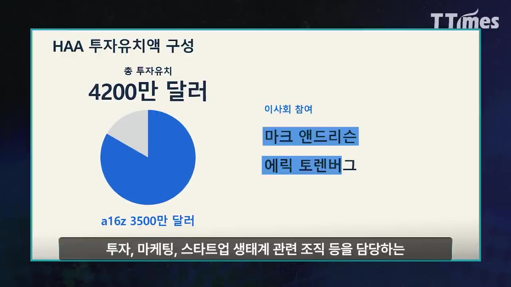
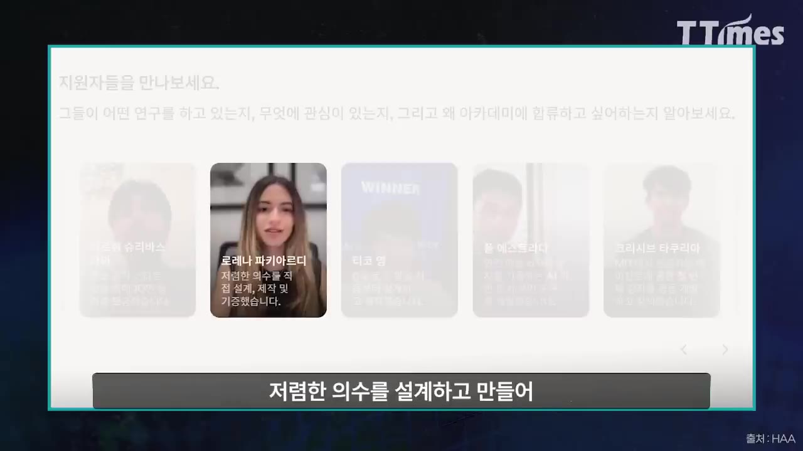
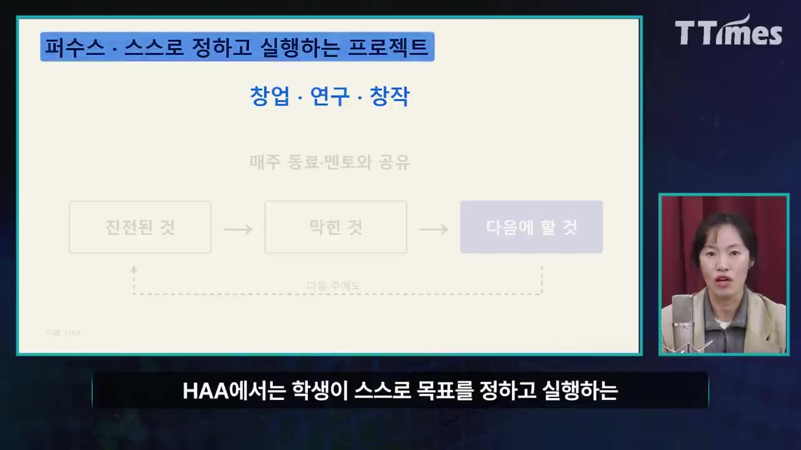
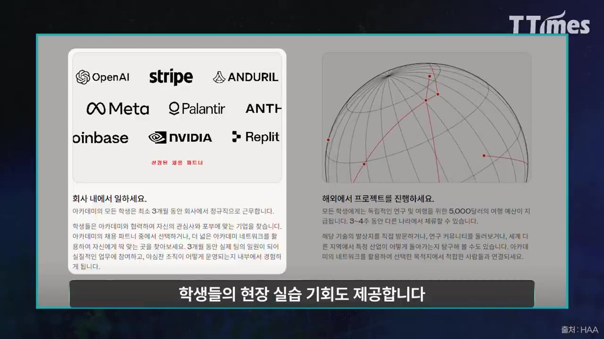
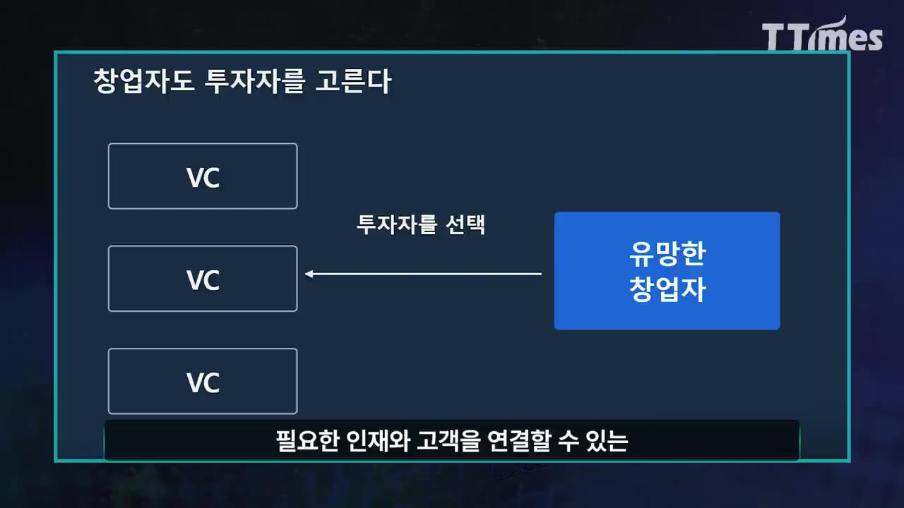

VC와 빅테크가 학교 만들어 AI시대 인재 직접 배출한다
▶ 원본 영상 보기한눈에 보기
- 벤처캐피털 앤드리슨 호로위츠(a16z)가 샌프란시스코에 대학을 대신할 학교 '호로위츠 앤드리슨 아카데미(HAA)'를 세웠습니다. 시험·과제·성적·학위는 없습니다.
- 첫 기수는 약 50명이고 학비가 무료입니다. 2027년 9월부터 1년 동안 운영하며, 학생 한 명에게 컴퓨팅 크레딧과 여행·연구비 5,000달러를 줍니다.
- 교육은 세 축으로 짜여 있습니다. 스스로 정한 프로젝트(퍼슈츠), 필요할 때 골라 듣는 집중 수업(코스), 앤트로픽·구글 등 협력사 10곳에서 하는 현장실습(코옵)입니다.
- HAA는 비영리 기관이 아닌 영리 교육 회사입니다. 2028년 가을부터는 2년 과정으로 바꾸고, 인허가를 받으면 1년에 6만~9만 달러를 받을 계획입니다.
- a16z가 노리는 것은 미래 창업자와 일찍 관계를 맺는 것입니다. 투자처를 두고 경쟁할 때 앞설 수 있는 동문 네트워크를 미리 만들어 두려는 것입니다.
이런 분께 도움이 됩니다
- AI 시대에 대학과 교육이 어떻게 바뀔지 궁금한 학부모·교육 관계자
- 실리콘밸리 VC가 인재와 투자 기회를 어떻게 미리 확보하는지 알고 싶은 분
핵심 내용
HAA는 어떤 학교인가
- 2026년 샌프란시스코에서 문을 연 '호로위츠 앤드리슨 아카데미(HAA)'입니다. 시험·숙제·성적이 없고, 과정을 마쳐도 학위는 주지 않습니다. (0:48)
- 설립자이자 CEO는 가간 비야니(Gagan Biyani, 자막상 '가감 비아니')입니다. 유데미(Udemy)를 창업했고 온라인 교육 기업 메이븐(Maven, 자막상 불분명)을 공동 창업했습니다. (1:11)
- 온라인으로 배울 기회를 넓혀 온 사람이 이번에는 학생을 한 장소에 모으는 학교를 만든 것입니다.
- 투자금은 4,200만 달러(약 550억 원)이고, 이 중 3,500만 달러를 a16z가 냈습니다.
- a16z 공동 창업자 마크 앤드리슨과 제너럴 파트너 에릭 토렌버그가 이사회에 들어갑니다.

- 강연자로 젠슨 황(엔비디아), 샘 올트먼(오픈AI), 사티아 나델라(마이크로소프트), 페이페이 리(월드랩스) 등이 나섭니다.
🔁 HAA 일정
- 첫 기수 모집
- 1년 과정 시작
- 현장실습(코옵)
- 유료 2년 과정
- 1첫 기수 모집
'파운딩 클래스 펠로우'라는 이름으로 약 50명을 뽑습니다. 고등학교 졸업 예정자를 먼저 뽑습니다. (1:57)
- 21년 과정 시작
2027년 9월부터 1년 동안 운영합니다. 학비는 무료이고 한 명당 컴퓨팅 크레딧(금액은 자막상 불분명)과 여행·연구비 5,000달러를 줍니다.
- 3현장실습(코옵)
2028년 6~8월, 3개월 동안 협력사에서 풀타임으로 일합니다.
- 4유료 2년 과정
2028년 가을부터 따로 2년 과정을 운영할 계획입니다. 인허가를 받으면 1년에 6만~9만 달러를 받습니다.
교육 철학: '지식의 시대'에서 '실행의 시대'로
- HAA는 '끊임없이 행동하는 시대를 위한 교육'을 내세웁니다. AI 덕분에 이제는 18살도 회사 설립, 소프트웨어 개발, 영화 제작, 연구를 할 수 있다는 것이 출발점입니다. (2:22)
- 그래서 앞으로 중요해지는 능력은 다음 다섯 가지라고 봅니다. 좋은 질문을 던지는 힘, 판단력, 강력한 도구를 잘 쓰는 힘, 뛰어난 사람과 협력하는 힘, 아이디어를 현실로 만드는 힘입니다. (2:47)
- 주도성도 배울 수 있는 역량으로 봅니다. 시험·과제 없이 시간을 자유롭게 쓰게 하는 것도 그 자유를 어떻게 쓸지 배우게 하려는 것입니다. (4:45)
💡 아는 것만으로는 부족하고, 해낸 것이 실력이 되는 시대라는 주장입니다.
학생 선발: 계획 대신 '이미 해낸 일'을 본다
- 심사에서 가장 중요한 것은 포트폴리오입니다. 직접 만든 소프트웨어, 참여한 연구나 행사처럼 아이디어를 실행한 흔적을 봅니다. (3:10)
- 홈페이지에 소개된 지원자 예시 (3:33)
- 로봇팔을 직접 설계하고 만든 학생 (축 수는 자막상 불분명)
- 값싼 의수를 설계·제작해 기부한 학생

- AI 기반 도서 관련 서비스(자막상 불분명)를 개발해 연간 반복 매출(ARR) 10만 달러 이상을 올리는 학생
- 이유: 해보고 싶은 일이 있어야 구체적인 질문이 생기고, 그 질문이 배움으로 이어진다고 봅니다.
- 예를 들어 의수를 만들어 본 학생은 '움직임을 더 정교하게 하려면?', '제작비를 더 낮추려면?' 같은 질문을 하게 됩니다. 이 질문이 공학 공부와 전문가 조언으로 이어집니다.
교육의 세 축: 퍼슈츠·코스·코옵
🔁 배움이 이어지는 구조
- 퍼슈츠(Pursuits)
- 코스(Course)
- 코옵(Co-op)
- 1퍼슈츠(Pursuits)
학생이 스스로 목표를 정하고 실행하는 프로젝트입니다. 창업·연구·창작 무엇이든 되고, 한 가지를 몇 달 파고들어도 됩니다. (5:09)
- 매주 동료·멘토를 만나 무엇이 진전됐는지, 어디서 막혔는지, 다음에 무엇을 할지 자기 말로 설명합니다.

퍼슈츠: 창업·연구·창작, 매주 진전된 것→막힌 것→다음에 할 것 공유 · ▶ 5:18 - 2코스(Course)
창업자·실무자가 가르치는 집중 수업입니다. 프로젝트에 필요하거나 관심 있는 과목을 골라 듣습니다. (5:57)
- 개별 강좌 41개, 분야별 트랙 21개가 있습니다.
- 3코옵(Co-op)
협력사 팀에 들어가 제품 개발과 협업을 경험하는 현장실습입니다.

OpenAI·stripe·Meta·NVIDIA 등 협력사 로고와 '회사 내에서 일하세요' 안내 · ▶ 7:32
- 공개된 과목 예시
| 분야 | 과목 |
|---|---|
| 기술 | AI 추론 엔지니어링(자막상 '출론', 불분명), AI 제품 개발과 평가, 현대 소프트웨어 개발자 |
| 연구 | AI 연구와 모델 (강사: 페이페이 리, 얀 르쿤 등) |
| 비즈니스 | 판매 기술, 브랜드와 시각적 정체성 개발, 승리하는 팀 만들기 |
- 설립 협력사 10곳은 안두릴, 앤트로픽, 코인베이스, 구글, 메타, 엔비디아, 오픈AI, 팔란티어, 레플릿, 스트라이프입니다. 컴퓨팅 자원·하드웨어를 지원하거나, 교육 과정을 함께 만들거나, 현장실습 자리를 줍니다. (7:10)
💡 퍼슈츠는 배울 이유를, 코스는 지식을, 코옵은 좋은 팀이 일하는 방식을 줍니다.
왜 온라인이 아닌 대면인가
- 에릭 토렌버그는 대학의 중요한 기능으로 '함께 일할 사람을 찾는 과정'을 꼽습니다. (7:57)
- 누가 약속을 잘 지키는지, 어려울 때 어떻게 행동하는지, 나와 잘 맞는지는 직접 함께 일해 봐야 안다는 것입니다.
- 같은 공간에서 프로젝트를 하고 토론하고 밥을 먹다 보면, 친구가 협력자가 되고 협력자가 공동 창업자가 될 수 있다고 봅니다. (8:20)
- HAA는 대학이 해 온 이런 관계 맺기를 실리콘밸리 창업자 네트워크와 연결하려 합니다.
a16z가 학교를 세운 이유
- HAA는 비영리 기관이 아닙니다. a16z가 설립을 돕고 투자한 영리 교육 회사입니다. 첫 기수만 무료입니다. (8:45)
- 2028년 가을부터는 2년 과정을 만들고, 인허가를 받으면 명문 사립대 수준인 1년 6만~9만 달러를 받을 계획입니다 (보도 기준).
- a16z는 HAA를 다음 세대 창업자와 실무 인재를 기르는 장기 투자로 본다고 설명합니다. (9:33)
- 투자자는 수업·멘토링을 하면서 학생이 어떤 문제에 관심을 두고 어떻게 푸는지 직접 봅니다.
- 학생이 나중에 창업해 투자자를 찾을 때, 처음부터 도와준 사람을 다시 찾을 가능성이 큽니다.
- 취업을 원하는 학생은 a16z 투자 기업이나 협력사와 연결해 줄 수 있습니다. 투자한 회사에 인재를 이어 주는 것도 VC의 중요한 역할입니다.
- 졸업생이 창업자나 핵심 인력이 되어 후배에게 조언하고 사람을 소개하면, a16z와 협력사를 중심으로 강한 동문 네트워크가 생깁니다.
- 이 네트워크가 중요한 것은 VC끼리 경쟁이 치열해져 VC도 창업자에게 선택받아야 하는 구조가 됐기 때문입니다. (11:08)
- 창업자는 투자금만 보지 않고, 인재·고객을 연결해 줄 네트워크가 있는 투자자를 찾습니다.

💡 학교는 a16z가 미래 창업자에게 투자자로 선택받기 위한 장기 포석입니다.
기억할 숫자·인용
- 투자금 4,200만 달러(약 550억 원), 이 중 a16z가 3,500만 달러
- 첫 기수 약 50명, 2027년 9월부터 1년 과정, 학비 무료, 여행·연구비 1인당 5,000달러
- 강좌 41개, 분야별 트랙 21개, 설립 협력사 10곳
- 코옵: 2028년 6~8월, 3개월 풀타임
- 2028년 가을부터 2년 과정, 1년 수업료 6만~9만 달러 (보도 기준, 인허가 조건)
- 에릭 토렌버그(2026년 2월 기고문): "벤처캐피털 패러다임 변화는 좋은 기업을 골라내는 것만큼, 또는 그 이상으로 그 기업에 투자할 기회를 확보하는 능력이 중요해졌다는 점이다."
생각해볼 점
- (내 의견) 학위가 없는 과정에 한 해 6만~9만 달러를 내야 한다면, 그 값어치는 결국 a16z 네트워크에 들어가는 데 있습니다. 교육 성과와 네트워크 효과를 따로 떼어 평가하기 어렵습니다.
- (내 의견) 이미 ARR 10만 달러를 올리는 학생처럼 성과를 낸 사람을 뽑으니, 졸업생이 성공해도 학교 덕분인지 선발 덕분인지 구분하기 어렵습니다.
- 영상도 말하듯 첫 기수 교육이 아직 시작되지 않았습니다. 지금 나온 것은 설계와 계획일 뿐이고, 투자사가 학생 진로에 미칠 이해관계 충돌도 지켜봐야 합니다.
바로 해볼 일
- HAA 홈페이지에서 공개된 41개 강좌 목록을 보고, 지금 내 일에 필요한 주제를 한 가지 골라 보기
- 아이디어로만 남은 일 하나를 골라, 이번 주 안에 결과물(시제품·글·코드)을 하나 만들어 보기
- 자녀나 후배와 '무엇을 아는가'보다 '무엇을 만들어 봤는가'를 주제로 이야기해 보기